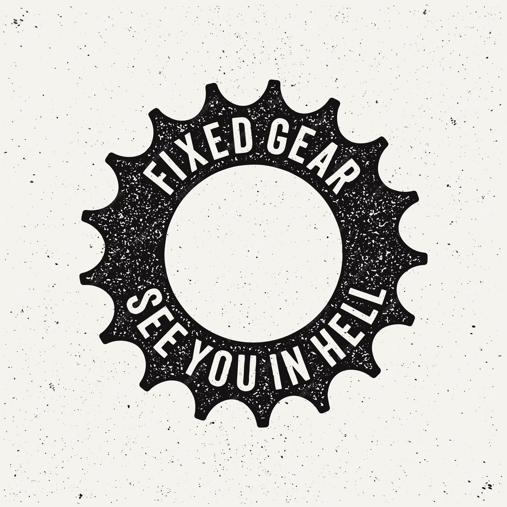

Contenido General
Contenido a tratar orígenes y evolución de la Mess Life,Impacto cultural y social en Nueva York, Importancia de la eficiencia, creatividad y pasión,Un viaje a través de la cultura urbana y su Influencia global.


Contenido a tratar orígenes y evolución de la Mess Life,Impacto cultural y social en Nueva York, Importancia de la eficiencia, creatividad y pasión,Un viaje a través de la cultura urbana y su Influencia global.
La mensajería en bicicleta de piñón fijo en la ciudad de Nueva York surgió en la décad a de 1970. En esta época, los ciclistas urbanos comenzaron a utilizar bicicletas de pista, que son bicicletas con piñón fijo y sin frenos de costa. Estas bicicletas eran baratas, fáciles de mantener y, lo que es más importante, muy rápidas. Los mensajeros en bicicleta las adoptadaron rápidamente como su medio de transporte preferido para navegar por las concurridas calles de la ciudad .
Orígenes: Bicicletas de pista, sin frenos, rápidas y económicas en la ciudad de Nueva York (década de 1970). Expansión: Inspiración en la cultura neoyorquina, eventos internacionales, moda urbana, documentales y películas. Impacto: Comunidades locales, estilos diversificados, innovación tecnológica, conciencia sobre la movilidad urbana. En pocas palabras: Velocidad, libertad, camaradería y pasión sobre dos ruedas.
Mensajería en Piñón Fijo: Cultura Urbana Estilo de vida: Más allá de simplemente entregar mensajes, una forma de expresión y pertenencia. Comunidad: Vínculos fuertes entre mensajeros, compartiendo experiencias y técnicas. Filosofía: Libertad, independencia, creatividad y pasión por la bicicleta. Estética: Ropa cómoda y funcional, bicicletas icónicas, estilo único. Evolución: Adaptación a diferentes contextos, nuevas tecnologías, impacto social. En resumen: Un estilo de vida urbano vibrante, auténtico y en constante evolución.
Entrega eficiente: Transporte rápido y económico en áreas urbanas congestionadas. Reducción de emisiones: Alternativa sostenible al transporte motorizado. Emprendimiento local: Creación de pequeñas empresas y oportunidades de trabajo. Dinamismo económico: Impulso a negocios locales en zonas de entrega. Visibilidad urbana: Marketing para empresas que contratan mensajeros. En resumen: Un sector económico emergente que contribuye a la sostenibilidad, la creación de empleo y la dinamización urbana. .

Atracción de la Mensajería en Piñón Fijo sin Frenos Sensación de libertad: Control total sobre la bicicleta, conexión con el entorno urbano. Adrenalina y emoción: Desafío y emoción al navegar por la ciudad a alta velocidad. Habilidad y dominio: Dominio de la bicicleta y técnicas de ciclismo urbano sin frenos. Eficiencia y rapidez: Mayor velocidad y maniobrabilidad en el tráfico urbano. Estética y estilo: Imagen rebelde y única asociada a la cultura de los mensajeros. Comunidad y pertenencia: Vínculo con otros mensajeros que comparten la pasión por el ciclismo sin frenos. .
Transmisión directa: A diferencia de las bicicletas con cambios, el piñón fijo no tiene rueda libre. Esto significa que los pedales y la rueda trasera están conectados permanentemente.Un solo engranaje: Tanto la rueda delantera como la trasera tienen un solo engranaje de diferente tamaño. La relación de cambio se determina por la diferencia en el tamaño de estos engranajes.